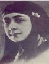

پذيرش > مقالات > علیه سکوت > 1- هدی شعراوی، مصر
 زنان پیشگام حقوق زنان در منطقه زنان پیشگام حقوق زنان در منطقه

 1- هدی شعراوی، مصر 1- هدی شعراوی، مصر
19 اردیبهشت 1387 - ترجمه هما مداح - نسخه قابل چاپ
تغییر برای برابری : هدی شعراوی با نام نورالهدی سلطان در 1879 در خانواده ای ثروتمند در مصر به دنیا آمد. سالهای اولیۀ زندگی خود را در یک "حرم" گذراند. هرچند آنچنان که خود در خاطراتش می گوید، حرم به نظر او چیزی بیشتر از قسمتی مجزا از خانه برای زنان و کودکان نبود و با تصاویر غربی ارائه شده از "حرم" فرسنگها فاصله داشت. در دوران کودکی سه زبان (ترکی، فرانسه و عربی) را آموخت اما در سالهای بعد شدیداً به سمت استفاده از زبان عربی گرایش پیدا کرد و حتی خاطرات روزانۀ خود را نیز به این زبان ثبت نموده است. در کودکی با زنی شاعر به نام سیده خدیجه مغربی آشنا شد که بر زندگی و آیندۀ هدی تاثیر گذاشت:
" او مرا شدیدا تحت تاثیر قرار داد چون در مورد مسائل ادبی و فرهنگی با مردان مباحثه می کرد. می دیدم که زنان بی سواد برای گفتن چند کلمه جلوی مردان دچار چه ترس و لرزی می شوند. دیدن سیده خدیجه مرا قانع کرد که اگر زنان باسواد شوند، می توانند با مردان برابر باشند و حتی از آنان پیشی بگیرند."
هدی در سیزده سالگی به عقد علی شعراوی درآمد. علی مردی 40 ساله بود که زنان دیگر و فرزندانی بزرگتر از هدی داشت. هدی در برابر این ازدواج تحمیلی مقاومت زیادی از خود نشان داد و تا 21 سالگی در خانۀ پدری خود ماند و حاضر به زندگی با علی نشد. در 1903 اولین فرزند خود، یک دختر را به دنیا آورد و در 1919 فعالیت سیاسی خود را آغاز نمود. این زمان مقارن با حرکتهای ملی گرایانه و ضداستعمار بریتانیا در مصر بود و هدی نیز مانند بسیاری دیگر از زنان به حزب وفد (تفویض) پیوست و در سازماندهی زنان در تظاهرات علیه انگلستان نقش عمده ای بر عهده گرفت. زنان در ابتدا در این حزب نقشهای جزئی و حاشیه ای بر عهده داشتند، هدی در خاطرات خود می نویسد که زنان برای نشان دادن اتحاد میان مسلمانان و مسیحیان، روی پارچه های سرخ، علامت هلال ماه و صلیب را همراه با هم، تکه دوزی می کرده اند.
در 1920 هدی به تاسیس کمیتۀ مرکزی زنان طرفدار حزب وفد کمک کرد و به عنوان اولین رییس آن انتخاب شد. در 1923 و در اعتراض به عدم اعطای حق رای به زنان توسط مردان ملی گرا و تازه استقلال یافتۀ مصری، هدی اتحادیۀ فمینیستی مصر را پایه گذاری کرد و خود رییس آن شد. اهداف اصلی این سازمان، کسب حق رای، افزایش تحصیلات زنان و تغییر قوانین به نفع زنان، بود. اغلب اعضای این سازمان را زنان طبقات بالا و متوسط تشکیل می دادند.
او همچنین در همین سال به اتفاق چند تن از همکاران و دوستانش در کنفرانسی فمینیستی در مورد حق رای در رم شرکت کرد و در سخنرانی خود بر جایگاه برابر زنان و مردان مصری در مصر باستان و همچنین در اسلام تاکید کرد و دلیل جایگاه نابرابر زنان را اشغال مصر توسط نیروهای بیگانه دانست. هدی در بازگشت از رم، در ایستگاه قطار قاهره، کشف حجاب کرد. پیش از او بسیاری از زنان مصری بی حجاب بودند اما این اقدام او و دوستانش نوعی اعتراض عمومی به حساب می آمد. مارگوت بدران از قول او نقل می کند که حجاب مظهر " موانع بزرگ بر سر راه زنان برای مشارکت در زندگی اجتماعی" است.
هدی در سال 1924 و در اعتراض به سیاستهای مردسالارانۀ حزب وفد و عدم توجه به مسائل زنان از کمیتۀ مرکزی این حزب استعفا کرد و در نامه ای سرگشاده نوشت:
" زنان استثنایی در لحظات خاصی از تاریخ ظاهر می شوند و توسط نیروهایی خاص کنار گذاشته می شوند. مردان چنین زنانی را موجوداتی خارق العاده و کارهای آنان را معجزه می دانند. اما زنان ستارگانی درخشان هستند که از پس ابرهای تیره می درخشند. آنان در زمانهای دشوار و هر زمان که مردان اراده کنند، ظاهر می شوند. در لحظات خطر، زمانی که زنان در کنار مردان ظاهر می شوند، مردان اعتراضی به حضور آنان نمی کنند. اما اقدامات خطیر و فداکاری های بی پایان زنان، نظر مردان راجع به آنها را تغیر نمی دهد.... مردان برای به رسمیت نشناختن قابلیتهای تمام زنان، زنان بسیار برگزیده را جدا کرده و برای آنها جایگاهی ویژه قائل شده اند. زنان با تمام وجودشان این موضوع را حس کرده اند. شرف و عزت نفس آنان عمیقاً پایمال شده است. .... آنان راه چاره را در مشارکت در امور اجتماعی با مردان دیدند. زمانی که دیدند راه بسته است، خواستار آزادی خود و احقاق حقوق اجتماعی، اقتصادی و سیاسی خود شدند. جهش آنان با سرزنش و تمسخر مواجه شد اما آنان دلسرد نشدند. و اگر مردان حقوق زنان را به رسمیت نشناسند، عزم زنان تبدیل به نبرد و نه نهایت جنگی علیه آنان خواهد شد."
هدی در طول زندگی خود بنیان گذار دو مجلۀ زنان نیز بود: زن مصری در 1925 و المصریه در 1937.
در 1944، اتحادیۀ فمینیست مصری میزبان کنفرانس فمینیست عرب در قاهره شد و در آن کنفرانس متنی معروف به "منشور زنان" حاوی 51 بند به تصویب رسید. سخنرانی هدی شعراوی در افتتاحیه و اختتامیۀ این کنفرانس از معروف ترین متون فمینستی زنان عرب است.
هدی شعراوی در سالهای آخر عمر خود، طرفدار بین المللی شدن کانال سوئز و مخالف سرسخت سلاحهای اتمی بود.
هدی شعراوی در 1947 درگذشت و نتوانست شاهد کسب حق رای توسط زنان مصری در 1956 (33 سال پس از تقاضای آن توسط سازمان او) باشد. پس از مرگ او اتحادیه فمینیست مصری بالاجبار منحل شد اما اعضای آن، انجمن هدی شعراوی را تاسیس کردند و عمدتاً به انجام فعالیتهای اجتماعی، و نه حقوقی یا فمینیستی، مشغول شدند.
زندگی و فعالیتهای هدی شعراوی، مانند بسیاری دیگر از زنان فعال در منطقه، شدیدا با جنبشهای ملی گرایانه در پیوند بوده است. شاید بتوان درخشان ترین نقطه و فعالیت زندگی او را جدایی از حزب وفد در اعتراض به بی توجهی به خواسته های زنان دانست. نکتۀ جالب توجه دیگر تاسیس سازمانی"فمینیستی" و نه " زنانه" است که از اولین سازمانهای فمینیستی منطقه به حساب می آید. او همچنین از اولین زنانی بود که با جنبش بین المللی زنان در سطح دنیا رابطه برقرار کرد و خود را جزئی از جنبش می دانست.
منابع:
1- Huda Shaarawi, Harem Years: The Memoirs of an Egyptian Feminist, translated and edited by Margot Badran (Virago Press, London: 1986)
2- Farida Shaheed, Great Ancestors: Women Asserting Rights in Muslim Context (Shirkat Gah, Lahoure, 2004)
3- Estelle B. Freedman, The Essential Feminist Reader, (Modern library, New york, 2007)
ارسال به
بالاترین
،
توییتر
،
فریندفید
،
فیسبوک
در همين بخش :
 8 مارس روزی که نمی توان از ما دریغ کرد 8 مارس روزی که نمی توان از ما دریغ کرد
با طلاق توافقی از حقارت و کتک و فحش رها شدم /گزارشی از دادگاه محلاتی: مریم مالک
تجمع مادران عزادار در رشت
تغییر ممکن است/ جلوه جواهری(26 روز پس از بازداشت کاوه مظفری)
گامهایی که با تزلزل نا آشنایند/ گرامی داشت چهلم ندا در رشت
ديگر بخش ها :
طرح یک میلیون امضا
|
مقالات
|
سایت نوشته ها
|
اخبار
|
گزارش كمپين
|
گفت و گو
|
علیه سکوت
|
كوچه به كوچه
|
نامه های شما
|
گزارش ویژه
|
گفتگو با اعضا
|
ویژه سالگرد کمپین
|
تصویر برابری
|
دل آرام علی
|
تریبون
|
مقالات
|
تاریخ شفاهی
|
خارج از چارچوب
|
کتابخانه
|
درباره کمپین
|
کمپین در شهرها
|
کمپین در بند
|
صدای تغییر
|
ویژه 22 خرداد
|
لایحه حمایت از خانواده
|
گالری
|
عشا مومنی
|
امیر یعقوبعلی
|
خدیجه مقدم
|
راحله عسگری زاده و نسیم خسروی
|
پروین اردلان،جلوه جواهری، مریم حسین خواه، ناهید کشاورز
|
زینب پیغمبرزاده
|
سعیده امین، سارا ایمانیان، محبوبه حسین زاده، ناهید کشاورز و همایون نامی
|
احترام شادفر
|
نسیم سرابندی زاده،فاطمه دهدشتی
|
وبلاگ مهمان
|
پرونده خرم آباد
|
دستگیری ها
|
مریم مالک
|
پرستو اللهیاری
|
مهرنوش اعتمادی
|
سمیه رشیدی
|
Other Languages
|
همراهان
|
«فراخوان کمپین ده روز با بهاره هدایت»
| English
|